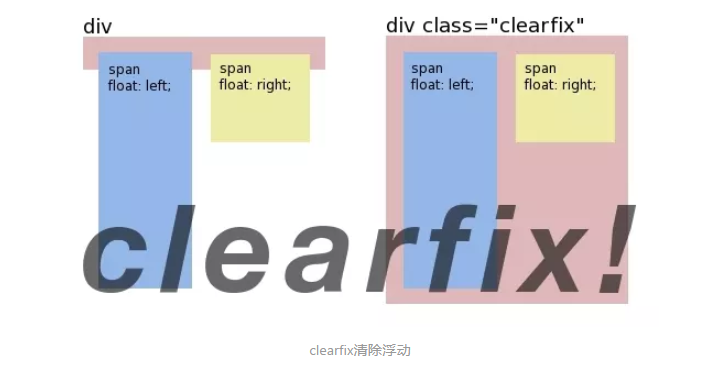

浮动
- 浮动是什么？
- 浮动特征
- 清除浮动
- 主要有两种方式
- clear清除浮动
- BFC清除浮动
- clear清除浮动
- clear清除浮动最佳实践
- BFC清除浮动
- BFC全称是块状格式化上下文，它是按照块级盒子布局的。我们了解他的特征、触发方式、常见使用场景这些就够了。
- BFC的主要特征
- BFC容器是一个隔离的容器，和其他元素互不干扰；所以我们可以用触发两个元素的BFC来解决垂直边距折叠问题。
- BFC可以包含浮动；通常用来解决浮动父元素高度坍塌的问题。
- BFC的触发方式
- 我们可以给父元素添加以下属性来触发BFC：
- float 为 left | right
- overflow 为 hidden | auto | scorll
- display 为 table-cell | table-caption | inline-block | flex | inline-flex
- position 为 absolute | fixed
- 所以我们可以给父元素设置overflow:auto来简单的实现BFC清除浮动，但是为了兼容IE最好用overflow:hidden。但是这样元素阴影或下拉菜单会被截断，比较局限。
浮动是什么？
浮动核心就一句话： 浮动元素会脱离文档流并向左/向右浮动，直到碰到父元素或者另一个浮动元素。
浮动最初设计的目的并没那么多事儿，就只是用来实现文字环绕效果而已，如下所示:
但是早期的前端开发者发现：浮动的元素可以设置宽高并且可以内联排列，是介于inline和block之间的一个神奇的存在，在inline-block出来之前，浮动大行其道。直到inline-block出来后，浮动也有它自己独特的使用场景。
浮动特征
浮动会脱离文档
脱离文档，也就是说浮动不会影响普通元素的布局

从上图可以看出，默认三个设置了宽高的block元素，本来会格子独占一行；如果框1设置了向左/向右浮动，他会忽略框2和框3，直到碰到父元素；同时也存在盖住普通元素的风险。
浮动可以内联排列
浮动会向左/向右浮动，直到碰到另一个浮动元素为止，这是浮动可以内联排列的特征。也就是说，浮动可以设置宽高，并且能够一行多个，是介于block和inline之间的存在。

从上图可以看出，对多个元素设置浮动，可以实现类似inline-block的效果；但是如果每个元素的高度不一致，会出现“卡住”的情况。
浮动会导致父元素高度坍塌
浮动会脱离文档流，这个问题对整个页面布局有很大的影响。
1 | // css |
结果如下，浮动元素脱离了文档流，并不占据文档流的位置，自然父元素也就不能被撑开，所以没了高度。

清除浮动
主要有两种方式
clear清除浮动
clear属性不允许被清除浮动的元素的左边/右边挨着浮动元素，底层原理是在被清除浮动的元素上边或者下边添加足够的清除空间
注意：我们是通过在别的元素上清除浮动来实现撑开高度的， 而不是在浮动元素上。
例子
1 | //clear清除浮动例子 |

不要在浮动元素上清除浮动
1 | //第三个元素加上clear:both |

注意：给第三个元素加上clear:both之后，第三个元素的左右都没有挨着浮动元素，但是为什么高度还是坍塌了呢？机智的你可能发现了，由于第三个元素是浮动元素，脱离了文档流，就算给第三个元素上下加了清除空间，也是没有任何意义的。
clear清除浮动最佳实践
1 | // 现代浏览器clearfix方案，不支持IE6/7 |

BFC清除浮动
BFC全称是块状格式化上下文，它是按照块级盒子布局的。我们了解他的特征、触发方式、常见使用场景这些就够了。
BFC的主要特征
BFC容器是一个隔离的容器，和其他元素互不干扰；所以我们可以用触发两个元素的BFC来解决垂直边距折叠问题。
BFC可以包含浮动；通常用来解决浮动父元素高度坍塌的问题。
BFC的触发方式
我们可以给父元素添加以下属性来触发BFC：
float 为 left | right
overflow 为 hidden | auto | scorll
display 为 table-cell | table-caption | inline-block | flex | inline-flex
position 为 absolute | fixed
所以我们可以给父元素设置overflow:auto来简单的实现BFC清除浮动，但是为了兼容IE最好用overflow:hidden。但是这样元素阴影或下拉菜单会被截断，比较局限。
欢迎对文章中的引用来源进行考证，欢迎指出任何有错误或不够清晰的表达。可以邮件至 1396961884@qq.com